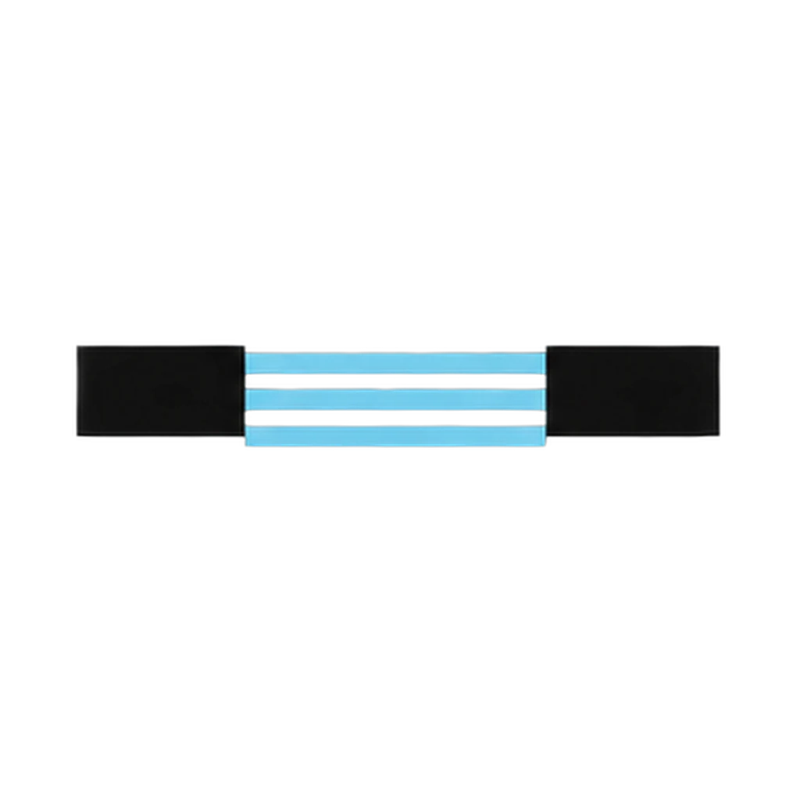
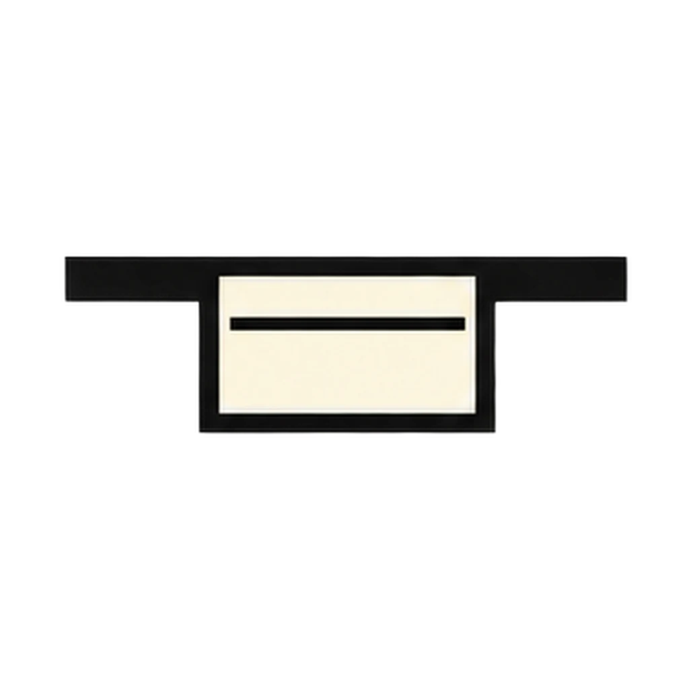
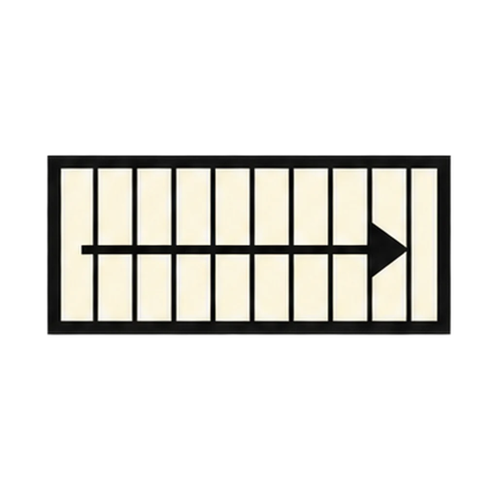
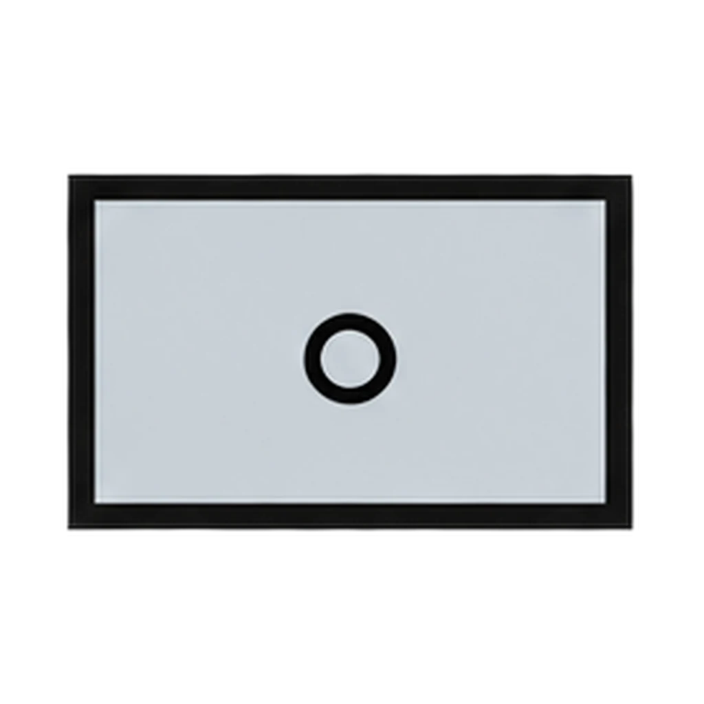
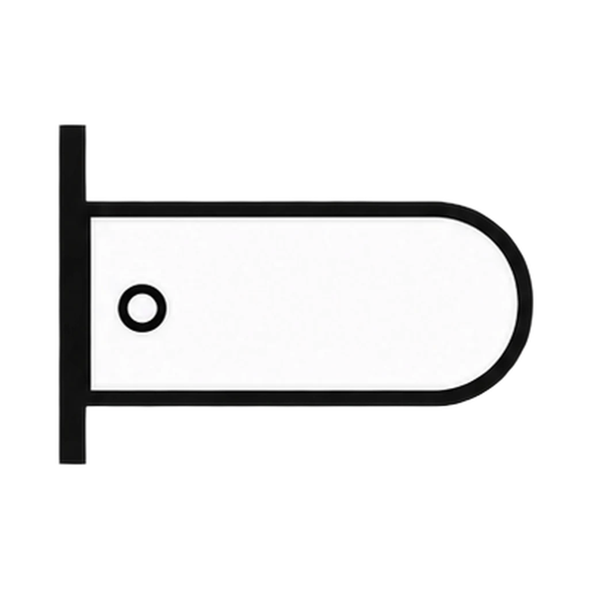
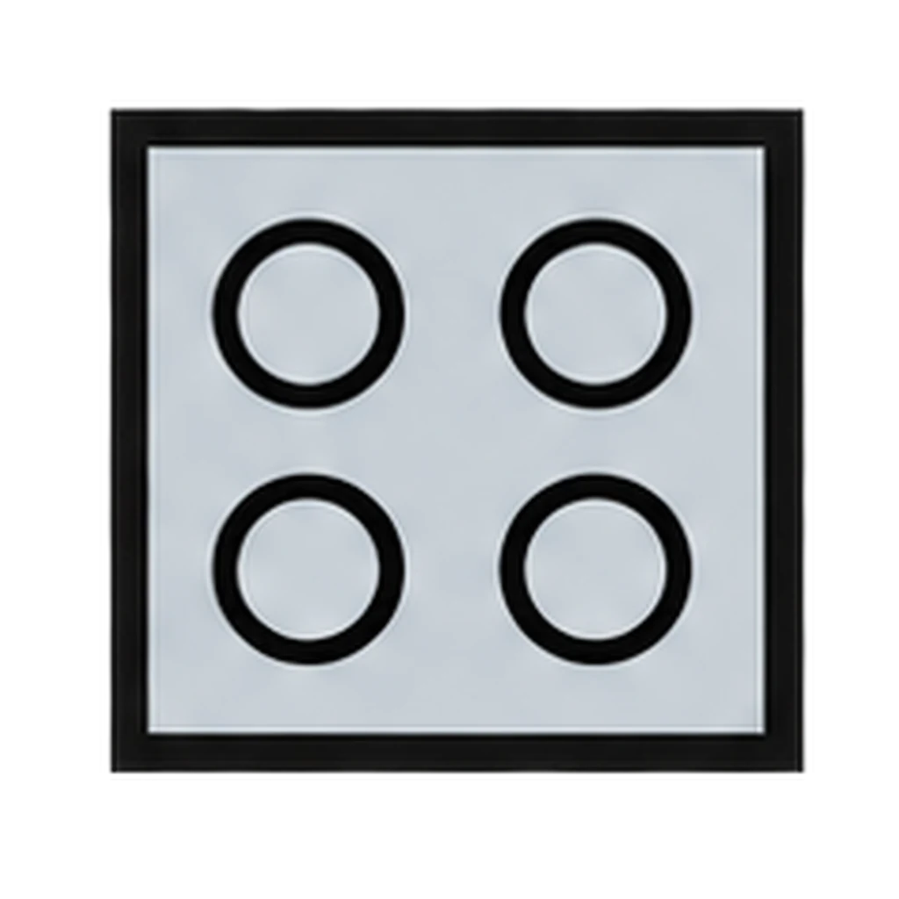
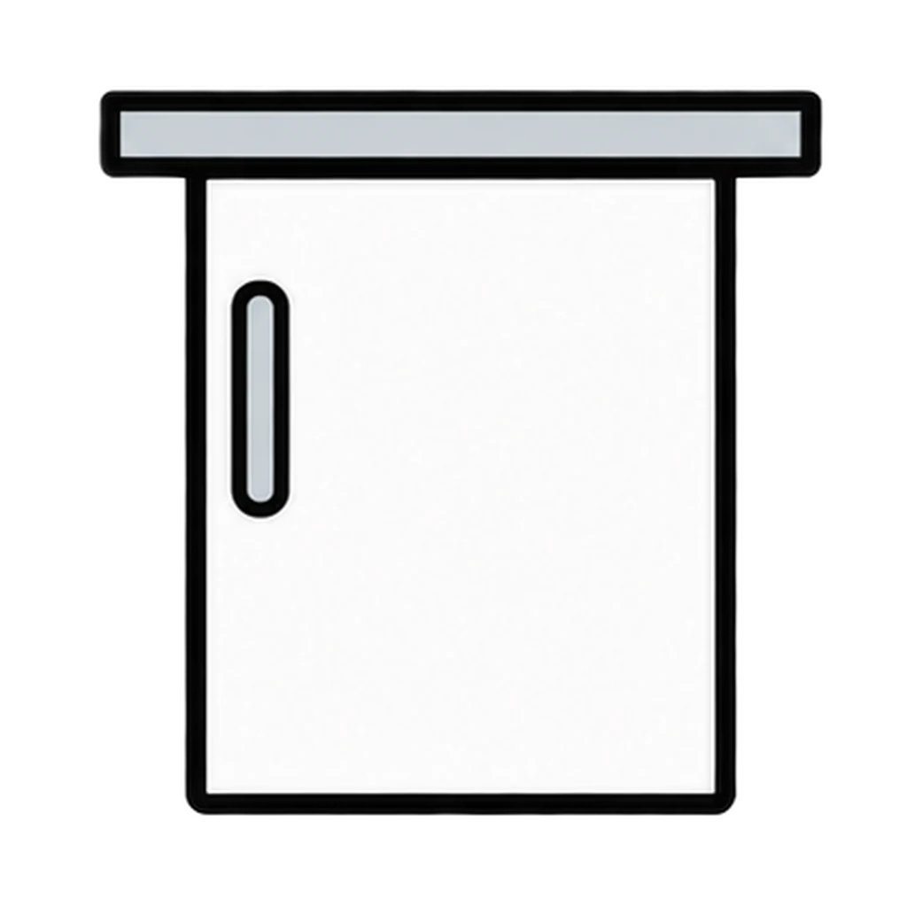
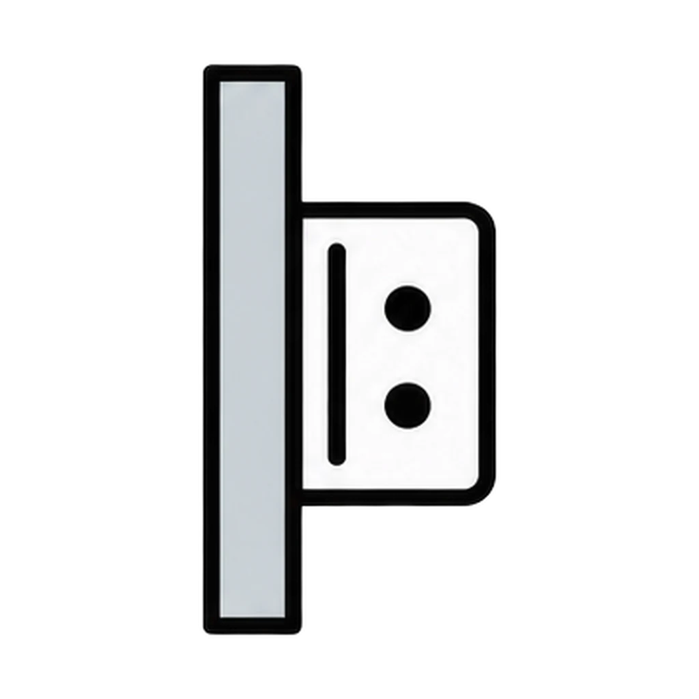

Reviews Lesson 4.10, Lesson 4.12. Reviews Lesson 4.10 Day 1: the eleven floor plan symbols, the scale rule at 1/4 inch = 1 foot, reading a plan, and the four zones, with the project-scale conversions from Lesson 4.12 and the two scale cards from Handout 04.17 added. Use it as the Day 2 do now check before the Design Vocabulary Check (items 10 and 11 are the conversions), or as the Lesson 4.17 do now, since scale done backward is the category most classes miss. About three minutes. Furniture placement and the path rule are left to Room Designer.
Plan Reader
A floor plan symbol appears. Tap its name from four choices. Then a scale conversion or a plan-reading question appears, and you tap the answer from four choices.
How to play








Done
The ones to study:
Worth knowing by heart:
- The scale for Lesson 4.10 is 1/4 inch = 1 foot: one square = one foot. The project scale in Lesson 4.12 is 1/2 inch = 1 foot: two squares per foot.
- Four rules for every plan: write the scale in the bottom corner; write whose room it is at the top; use a ruler for every wall; pencil only.
- Furniture placement, the door swing rule, and the 36-inch path are in Room Designer.